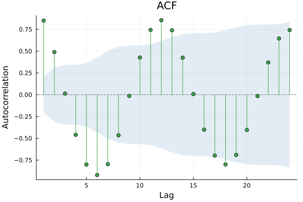
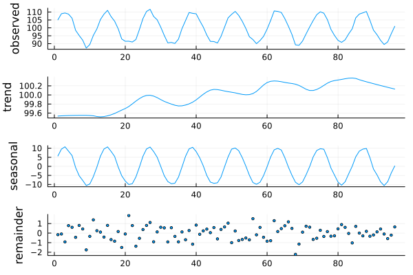
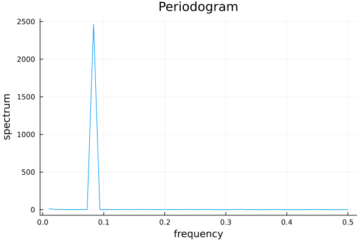
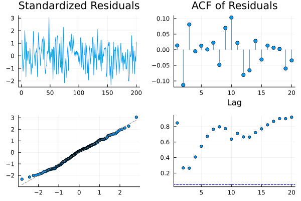
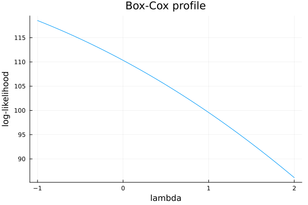

Getting Started
Installation
] add TSAnalyticsA first example
TSAnalytics accepts any container that satisfies tsvalues — a plain Vector, a TSFrames.TSFrame column, TimeSeries.values(ta), or a DataFrames.jl column all work identically. This example just uses plain vectors.
julia> using TSAnalytics, Random
julia> Random.seed!(1); y = cumsum(randn(500)); # a random walk
julia> adf_test(y).pvalue > 0.10 # fails to reject the unit-root null
true
julia> kpss_test(y).pvalue <= 0.05 # rejects level-stationarity
trueChecking a series for autocorrelation
julia> dy = diff(y);
julia> length(acf(dy, 0:5).values)
6
julia> ljungbox_test(dy, 10).pvalue > 0.05 # differenced series looks like white noise
trueVisualizing results
TSAnalytics defines RecipesBase.jl recipes for its result types, so plot(result) works with any Plots.jl-compatible backend — without TSAnalytics itself taking on a Plots.jl/Makie.jl dependency (see ACFResult and the recipe list in the API reference).
The @example blocks below are real, executable code — Documenter runs them at build time and embeds the actual generated images, the same as any other Julia package's plotting examples. This particular editing session hit a local environment problem unrelated to TSAnalytics (a broken Qt6/GR dependency on that machine) that made it impossible to render and eyeball them there first. They'll render for real the next time the docs build on CI (Ubuntu) — if that build ever fails on one of these blocks, fix the code here, don't just delete the warning.
Autocorrelation
using TSAnalytics, Plots, Random
Random.seed!(1)
y = 100 .+ 10 .* sin.(2π .* (1:96) ./ 12) .+ randn(96)
plot(acf(y, collect(1:24)); title="ACF")
Decomposition
plot works the same way on any of ClassicalDecomposition, STLDecomposition, and MSTLDecomposition — a stacked observed/trend/seasonal/remainder display.
plot(stl_decompose(y, 12))
Spectral density
periodogram/spectral_density return a plain NamedTuple, deliberately with no dedicated recipe (see their own docstrings for why) — plot the fields directly:
pg = periodogram(y)
plot(pg.freq, pg.spec; xlabel="frequency", ylabel="spectrum", legend=false, title="Periodogram")
Residual diagnostics
diagnostic_plot produces the standard 4-panel residual display (standardized residuals, ACF, Q-Q plot, Ljung-Box p-values across lags):
resid = randn(MersenneTwister(2), 200)
plot(diagnostic_plot(resid))
Box-Cox profile likelihood
x = abs.(randn(MersenneTwister(3), 200)) .+ 5.0
profile = boxcox_profile_plot(x)
plot(profile.lambdas, profile.loglik; xlabel="lambda", ylabel="log-likelihood", legend=false, title="Box-Cox profile")
Design notes worth knowing before you dig further
- No container lock-in. See
tsvalues— every function above also accepts aTSFrame/TimeArray/DataFramecolumn directly. - Response-surface p-values by default.
adf_test/pp_testuse the same finite-sample MacKinnon response-surface method R/statsmodelsdo;kpss_test'snlags=:auto(Hobijn et al. 1998) is available alongside its:shortdefault. SeeADFTest/KPSSTest/PPTestanddevelopment-sequence.mdfor what's still approximate. - Reference, never port. Every algorithm here is implemented natively from its primary paper or textbook, validated against R/Python output numbers on standard series (Nile, AirPassengers, sunspots) — never by translating another package's source. See the project's
development-sequence.mdfor the full policy and roadmap.